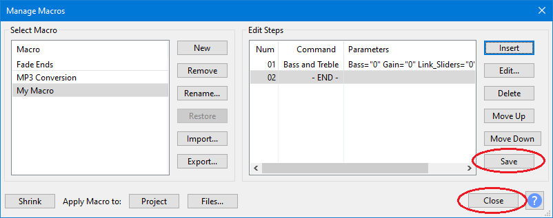
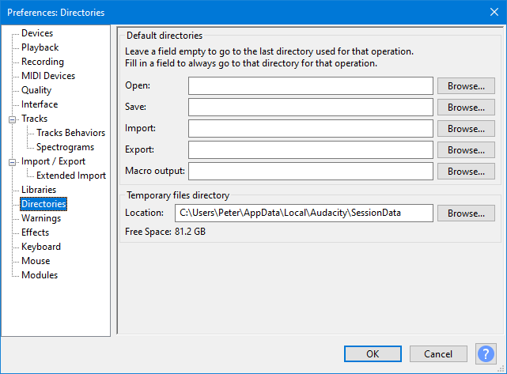

New features in this release
Version 3.0.2 is primarily a maintenance release.
- Details of all the major changes since 3.0.0 can be found in Audacity Release Notes 3.0.2.
Contents
- Overview
- Updating from Audacity 2.x
- Manage Macros improvements
- Changes in Macros working on files
- 36 Bug Fixes
Overview
Audacity 3.0.2 is about bugfixes for Audacity 3.0.0. Some bugs which didn't show up in our testing of 3.0.0 became apparent once 3.0.0 was being used by more users. We wanted to fix these and also to get more diagnostic information about what goes wrong when SQLite (the database we use) can't read or write a file. So we added more informative diagnostics for when there is an error.
One cluster of bugs we fixed relate to Unicode. Unicode is a system for representing many non-English letters and symbols. We, Microsoft and Apple all have made mistakes with Unicode that affected Audacity 3.0.0. One problem we tracked during 3.0.0 turned out to be a Windows update issue with Unicode input, which was resolved by a later Windows update. Disappearing checkmarks in macOS Big Sur release turned out to be a Unicode issue, believed to be in Apple code, which we now work around in 3.0.2. A mistake we made with Unicode prevented Audacity working in Korean and Japanese.
Some of our bug-fixes are small changes in areas where the previous Audacity behaviour was not as we wanted. 3.0.2 may only be a 'point' release, but we think it's one most people using 3.0.0 will want.
Bugs we've had trouble with
After 3.0.0 was launched a few users discovered a couple of mysterious bugs which we had not encountered in our extensive QA testing of alpha and Release Candidate builds. These two important bugs that 3.0.0 users saw were hard for us to track down as we could not replicate them. We added extra diagnostic information to help us do that:
Error: Failed to open database file
There was an error which only occurred occasionally for a few users but had us mystified. Usually this seemed to occur when trying to import an audio file, but there may have been other ways it could happen. It did not appear to be causing users to experience data loss or damaged projects. It was this bug: Bug 2700 - "Failed to open the project database"
We added a Show Log to this error message so we could gather more information about this to aid the developers in analyzing the issue. This led to what's probably a solution, as Jack L, with this extra logging, was able to get the problem sufficiently often for us to get a handle on it. This extra information told us that in some circumstances we were trying to access the disk before it was ready again, with back to back requests too quickly. Paul then changed the logic of opening a database so that two important requests were always one after the after. This should address the opening issue. Leland added a retry, so that if SQLite can't yet read the database, it tries again, but fractionally later. The retry timeout should benefit all code in Audacity that reads the database, not just at the time of opening. Jack L then ran his torture tests workload and the problem he experienced was gone.
Even so, because the original error was only occasional, we can't know for sure that it, or similar issues, are gone! We still have the extra logging in Audacity. If you do encounter the dialog indicating a problem, please click on the Show Log chevron to generate the log and send us a copy of the screenshot to the Audacity Forum. You may see a variant of the message, "The project's database failed to reopen"

- Clicking on the Show Log chevron will expand the message to show log data.
Please see this FAQ Error page for more details
| This can normally be resolved by simply exiting Audacity, relaunching and then making the required import of an audio file. |
False recovery offered on launch
This is another mysterious issue which only occurred very occasionally and was foxing us.
Sometimes after exiting Audacity without saving the project when offered, on the next relaunch a false recovery can be offered when there is really nothing to be recovered as no crash has occurred to cause this. We think this error had the same underlying cause, but we don't know for sure.
This bug is Bug 2732 Faux recovery offered on launch (very moonphase). If you encounter this and accept this recovery it "recovers" an empty project and no damage is done.
If you do see this error, please let us know what you can of how it happened.
Updating from Audacity 2.x
With the release of Audacity 3.0.0 the project file structure of Audacity was changed significantly with the entire project contained in a single unified database file.
If you have already updated to 3.0.0 you should already be aware of this.
But if you are updating from any earlier 2.x Audacity version please read Updating from Audacity 2.x to Audacity 3.x.
Manage Macros improvements
The Manage Macros dialog has been improved for this release:
- The button has been removed
- It is replaced with a button
- A new button has been added to enable you to save the results of editing a Macro.
- The button is grayed-out until you edit a Macro.
- 
See Manage Macros for more details.
Changes in Macros working on files
We have extended the options in Directories Preferences to include a new entry for Macro output.
- 
If you leave the entry for Macro output blank then Audacity will default to creating a folder called "macro-output" in:
- Windows: C:\Users\<your username>\Documents\Audacity
- Mac: /Users/<your username>/Documents
- Linux: /home/<your username>/Documents
We believe that a single rationalized folder for all Macro output from processing files with Macros is a more sensible approach.
Bug Fixes
P1 Bugs Fixed
- 2708 Nyquist effects fail silently with One hour plus stereo
- 2706 Win: Vocal Reduction and Isolation most options fail
- 2698 Noise Gate fails silently if "hold" is non-zero
- 2720 Cannot open project that's in a read only folder - error message vague
- 2710 Compressor with audio before T=0 crashes Audacity
- 2703 Mac: EGAT preview dialog is hidden behind the EGAT dialog
- 2707 Opened projects not being removed from "audacity.cfg"
- 2697 Linux: AUP3 projects use incorrect char size on "differently" configured wxWidgets
- 2718 Failed to execute a project file command (on server)
P2 Bugs Fixed
- 2701 Progress dialog interferes with scripting
- 2714 (Japanese & Korean) "Unable to parse project information"
- 2722 Noise Gate fails on a one hour stereo selection
- 2716 Cleared "Recent Files" are restored on next launch
- 2709 Mac: Missing sub-menu check marks in French
- 2696 Metadata Editor: changed size is not remembered/restored on next use
- 2699 Windows: Cannot edit labels with emoji in them correctly
- 2704 Mac: Stop button in EGATs with Preview does nor stop the preview
- 2676 Export: Incorrect handling over 0 dB
- 2694 Coloring of tracks in Mixer Board are awry
- 2692 Mac: VI users get trapped in radio buttons of Keyboard Preferences
- 2734 Apply macro may not create the macro-output folder in the source directory
P3 Bugs Fixed
- 2723 VST_PATH environment variable fails for non-standard locations
- 2209 Nyquist: Audacity crashes when running seq-write-smf
- 2522 In Macros, Record New Track and Play with a selection do not wait for completion.
- 2672 Plug-ins listed in reverse alphabetic order in Plug-ins Manager
- 2211 Mac: keyboard navigation problem in Libraries preferences dialog
- 2523 Audacity may suggest installing FFmpeg even when FFmpeg is installed
P4 Bugs Fixed
- 2733 Noise Gate 'Level Reduction' has a minimum of -60 dB
- 2726 Enh: Some preference changes are not written until Audacity exits
- 2717 Linux: Internal Error at DBConnection.cpp line 275
- 2721 Allegro (.gro files) cause crash with undo/redo
- 2684 Bitrot for Docimage script
- 2690 Move the actual build information to the top of the build information tab
- 2124 Import>Audio failure error message is misleading
- 2511 Enh: Remove the "Variable Speed: Fast / Standard" option from MP3 dialog
- 2736 Recent files list can be replaced by ExportCL commands
Links
> Audacity Release Notes 3.0.2 - detailed release notes for this release of Audacity